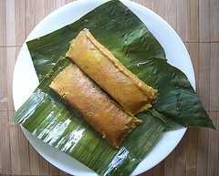

Pasteles
by Ramona Cruz-Peters

Description:
Pasteles are a type of tamal made with a masa of plaintain
and yuca. They are a traditional dish, especially around
the holidays, in Puerto Rico and other Caribbean cultures.
Like tamales, making pasteles is a family affair.
Ingredients:
Picadillo Filling:
- 1/2 cup achiote oil
- 1/2 cup sofrito
- 3-4 pounds pork shoulder cut into small chunks (about 1/2 inch),
include some of the fat
- 2 cups of water
- 1 15-ounce can garbanzo beans, drained
- 1 8-ounce can tomato sauce
- 1/2 cup chopped green olives with pimiento
- 2 envelopes of ham flavor concentrate (from a 1.41-ounce box)
- 1 tablespoon oregano, chopped fresh or dried
- 1 teaspoon black pepper
Masa:
- 12 very green bananas (Important that these are very green)
- 4 very green plaintains
- 3 pounds Yautia (taro root)
- 3 pounds Yuca (cassava)
- 1 1/2 pounds kabocha squash
- 2-3 medium potatoes
- 1 to 1 1/2 cups reserved picadillo sauce
- 1/2-1 cup achiote oil (to oil the wrapping paper)
Other Supplies Needed:
- Parchement paper or pasteles wrapping paper
- Banana leaves
- Butcher's twine
Directions:
Preparing the picadillo:
-
Heat the achiote oil in a pot. Sauté the sofrito
in the oil for about a minute, then add the chunks
of pork and continue sautéing until the meat is browned.
-
Add the water, garbanzo beans, tomato sauce, olives, ham flavoring,
oregano, salt, and pepper to the pot and stir. Bring to a boil, then
reduce heat and simmer for 45 minutes.
-
Drain the liquid from the picadillo, separating 1 to 1 1/2 cups of the liquid
from the auce to use for the masa later.
-
Let the picadillo cool and set aside.
Preparing the masa:
-
Peel all the green bananas, plaintains, Yautio, Yuca,
kabocha squash, and potatoes and cut them into small pieces
(note: yuca is very hard). Tip: Keep the pieces in cold
salty water to keep them from darkening while waiting to be grated. Dry the pieces
before adding them to the food processer.
-
Grate or finely shred the vegetable pieces using a food processor
adding some of the reserved picadillo sauce while grating.
-
Empty the grated masa into a large bowl and keep grating the rest of the vegetable
pieces. Stir the masa in the large bowl as you add new batches
to make sure the ingredients are proportional throughout. If desired, you
can add more sauce or achiote oil to the masa for adding coloring.
Stuffing the pasteles:
-
Cut parchment paper into 12x12-inch or 12x18 inch pieces (if not using
pre-cute pastel wrappers). Rub a little achiote oil in the center (about 5-inch
square) and place a banana leaf of about the same size over it. Rub a little oil
on the leaf as well.
-
Place 3/4 cup of the masa on top of the leaf and spread to approximately cover the leaf
leaving a small indentation in the middle.
-
Place 1/4 of the picadillo in the indentation at the masa center.
Tip: Make sure the picadillo is drained or the liquid will run out of the
pastel while you're wrapping it.
Wrapping the pasteles:
-
Fold the paper (with the masa already applied) by grabbing the long ends
and bringing them up to touch and align with each other. The masa will have overlapped
the picadillo filling, sealing the filling inside the masa.
-
Fold both edges of the paper together tightly and fold once again tightly
(about 1 1/2 inch folds). The last fold should bring the papear over the now
elongated pastel masa.
-
Fold the two remaining ends individually twice tightly towwards the masa; the
fold should rest on top of the masa when done.
-
Snugly tie a string of butcher's twine lengthwise around the pastel and secure in
the center leaving enough string to wrap around the waist of the pastel. Tie the
ends of the string snugly around the pastel and tie into a bow or knot. Cut the ends
short. Tip: If you're not sure one string around the waist is secure enough,
wrap two strings evenly spaced around waist of the pastel instead.
-
The pasteles may be frozen raw until needed.